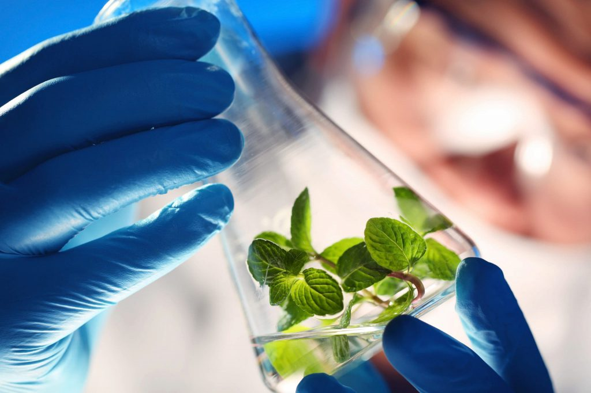
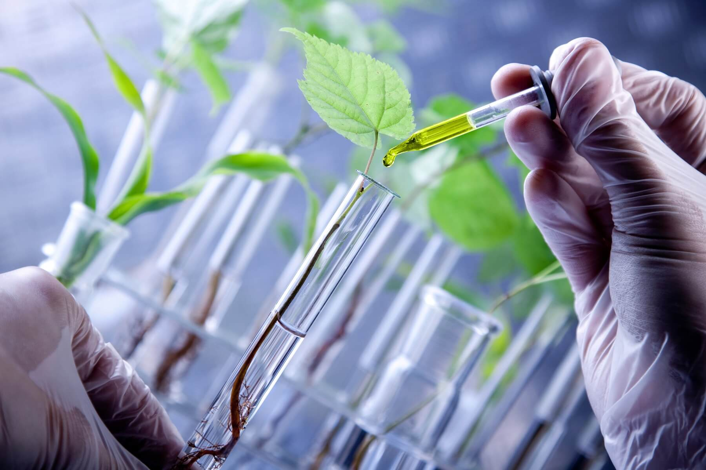

A seleção genética é feita através da seleção de plantas que apresentam características desejáveis. A partir disso, é feito o cruzamento para obter plantas híbridas com essas características.  
O melhoramento de plantas engloba todas as técnicas, os métodos, as estratégias ou os recursos utilizados para que algum progresso seja incorporado a uma espécie vegetal.